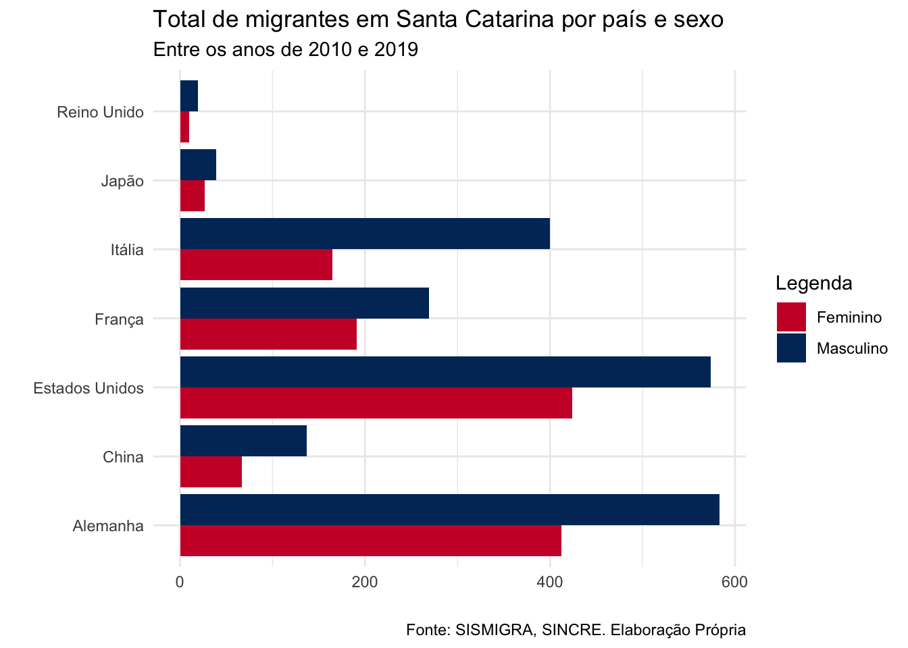
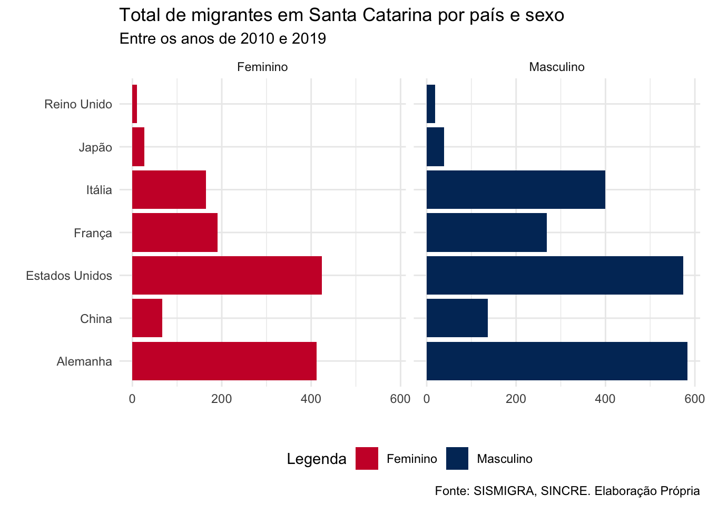
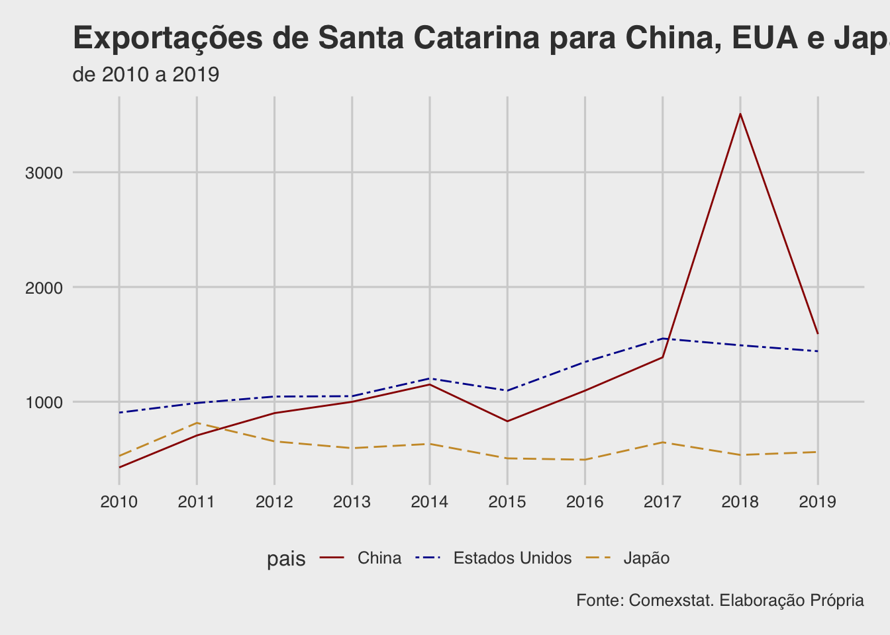

Workshop 4 - 23 de fevereiro
Customização de gráficos no ggplot2
Neste workshop vamos recapitular rapidamente o que vimos sobre criação de gráficos no ggplot na última aula e iremos aprender a customizar nossos gráficos: incluir título, mudar cor, usar temas e templates já incluídos no ggplot2, etc.
Antes de tudo precisamos preparar nossa seção de trabalho. Continuaremos trabalhando com as tabelas criadas na atividade 2 (particularmente a migracao_alemanha) e as que criamos no workshop 3 (exportacao_final e migracao_sexo_final). Vamos apontar nosso diretório de trabalho, fazer o upload do tidyverse e das tabelas:
#Apontando o R para meu diretório
setwd("~/Dropbox/repositories/workshop_ufsc2021")
#upload de pacotes
library(tidyverse)
#upload de bancos
#banco migracao_alemanha
migracao_alemanha<-read_csv("dados/migracao_alemanha.csv")
#banco exportacao_final
exportacao<-read_csv("dados/exportacao_final.csv")
#banco migracao_sexo_final (wide - workshop 3)
migracao_sexo_wide<-read_csv("dados/migracao_sexo_final.csv")Vamos começar com nossos dados de migração. No workshop passado vimos como criar um gráfico de barras de migração alemã para Santa Catarina utilizando o banco criado na atividade 2, o migracao_alemanha. Vimos que antes de tudo precisamos transformar a coluna ano de numérica para fator. A seguir, para criar a estrutura básica do gráfico precisamos criar duas camadas: uma que indica ao ggplot2 a tabela que será utilizada com os respectivos eixos x e y incluídos no argumento aes, e uma segunda camada indicando a geometria do gráfico com geom_bar e a estatística a ser apresentada pelas barras. No nosso caso queremos apresentar os dados assim como estão na tabela, então usamos o argumento stat=identity.
migracao_alemanha$ano<-as.factor(migracao_alemanha$ano)
ggplot(migracao_alemanha, aes(x=ano, y=total))+
geom_bar(stat = "identity")Incluindo labels, títulos e notas
Vamos customizar esse gráfico. Como explicado no workshop anterior, cada novo elemento incluído ou alterado no ggplot2 será uma nova camada. O ggplot2 tem centenas de comandos para criar e customizar nossos gráficos e é impossível conhecer todos e sabê-los de memória. Por isso é importante se acostumar a ler a documentação dos pacotes e chamar o help do R. No material complementar da aula passada tem tutoriais muito bons ensinando a fazer diversos outros tipos de gráficos.
Vamos começar pelos labels dos eixos, ou seja, o texto que cada eixo está apresentando. No eixo x, em que temos os anos, o label não é necessário porque dá para compreender vendo o gráfico que trata-se dos anos. Além disso, posteriormente vamos colocar a informação de ano no subtítulo do gráfico. Para o eixo y, queremos alterar total para total de migrantes. Para realizar essas alterações incluiremos as camadas xlab() e ylab() e escreveremos o novo texto entre aspas dentro dos parênteses. Como queremos que o eixo x fique em branco, não escreveremos nada dentro das aspas.
ggplot(migracao_alemanha, aes(x=ano, y=total))+
geom_bar(stat = "identity")+
xlab("")+
ylab("total de migrantes")Veja que conforme vamos alterando o gráfico vamos incluindo novas camadas. No entanto, para organizar melhor o trabalho, é possível salvar o gráfico como ele está no momento e ir adicionando camadas ao objeto. Vamos ver como isso funciona. Primeiro vamos salvar esse código que temos agora ao objeto plot_migracao_alemanha.
plot_migracao_alemanha<-ggplot(migracao_alemanha, aes(x=ano, y=total))+
geom_bar(stat = "identity")+
xlab("")+
ylab("total de migrantes")Agora quero adicionar mais informações nesse gráfico. Vamos incluir um título que será Total de migrantes alemães em Santa Catarina, um subtítulo dizendo entre os anos de 2010 e 2019, e uma nota com a fonte dos dados, que será Fonte: SISMIGRA, SINCRE. Elaboração Própria. Para incluir todos esses textos criaremos uma nova camada com a função labs que receberá como argumentos title, subtitle e caption, que devem ser incluídos entre parênteses e seguidos por vírgulas. Como sempre, os textos deverão ser incluídos entre aspas.
Como salvamos as camadas anteriores ao objeto plot_migracao_alemanha não precisamos reescrever todo o código. Vamos usar este objeto e adicionar a nova camada labs a ele.
plot_migracao_alemanha +
labs(title="Total de migrantes alemães em Santa Catarina",
subtitle="entre os anos de 2010 e 2019",
caption="Fonte: SISMIGRA, SINCRE. Elaboração Própria")Ótimo! Estou satisfeita com esse layout. Vou salvar esta nova camada ao objeto que eu já tenho. Basta subscrever o objeto com o código do bloco anterior. Para visualizar o gráfico basta escrever o nome do objeto e rodá-lo.
plot_migracao_alemanha<-plot_migracao_alemanha +
labs(title="Total de migrantes alemães em Santa Catarina",
subtitle="entre os anos de 2010 e 2019",
caption="Fonte: SISMIGRA, SINCRE. Elaboração Própria")
plot_migracao_alemanha
Usando temas para alterar o painel
Agora vamos mudar o visual do gráfico, como cor e linhas de fundo. O ggplot2 já vem com algumas formatações de painel prontas, que chamamos de themes (temas). Essa é uma forma rápida de formatar gráficos, mas também é possível customizar esses detalhes. Vamos focar apenas nos temas já prontos pois eles já nos permitem ter visualizações muito boas. Caso queira ver com mais detalhes como alterar cor de fundo, linhas de paineis, etc, sugiro verificar a documentação do pacote.
Para termos um gráfico com visual clássico, com fundo limpo e linhas de eixos delimitadas podemos usar o tema theme_classic(). Para isso, basta adicionar essa função em uma camada ao plot já criado.
plot_migracao_alemanha + theme_classic()Existem diversos temas no ggplot2. Você encontra uma lista com todos os temas no material complementar. Vamos dar uma olhada em alguns.
plot_migracao_alemanha + theme_minimal()plot_migracao_alemanha + theme_light()
plot_migracao_alemanha + theme_bw()Alterando posição de barras e direcionamento de eixos
No workshop 3 vimos que podemos alterar as posições das barras. Utilizamos, dentro da função geom_bar o argumento position e utilizamos a opcão position_dodge para criar um gráfico de barras agrupadas de países para cada ano. Vamos explorar um pouco mais as possibilidades de posições de barras.
Agora vamos criar um gráfico de barra comparando a entrada de alemães em Santa Catarina por sexo utilizando nossa tabela migracao_sexo_wide. Queremos fazer um gráfico em que a mesma barra apresente o total de mulheres e homens por país. A barra terá duas cores, uma para cada sexo. Chamamos esse tipo de gráfico de stacked. Para criá-lo precisamos primeiro transformar essa tabela de wide para long, como vimos no workshop anterior, pois esta é a forma a qual os dados devem ser apresentados para o ggplot.
Como mostrado no workshop anterior, realizarei a alteração da tabela com tidyr e criarei a estética do gráfico (argumento aes) com ggplot no mesmo bloco de códigos utilizando pipes e salvarei em um objeto chamado plot_migracao_sexo. No entanto, estou incluindo um novo argumento que ainda não exploramos dentro da função aes chamado label. Mais adiante vou querer que o valor representado pelas barras apareçam dentro delas. Para isso preciso indicar na camada aesthetics (aes) qual coluna da nossa tabela estão os valores que deverão aparecer nessas barras que, no nosso caso, estão na coluna valor criada na função pivot_longer neste mesmo bloco de código.
plot_migracao_sexo<-migracao_sexo_wide%>%
pivot_longer(cols = Feminino:Masculino,
names_to = "sexo",
values_to = "valor")%>%
ggplot(aes(x=paises, y=valor, fill=sexo, label=valor))
plot_migracao_sexoPara criar um gráfico de barras stacked basta incluir em geom_bar apenas o argumento stat. Como já indicamos que nossas barras representam os valores por sexo no argumento fill do aes, a função geom_bar apresentará um gráfico stacked como default.
plot_migracao_sexo + geom_bar(stat = "identity")O bom deste gráfico é que visualizamos não apenas o total de migrantes por país, permitindo a comparação entre eles, mas também a diferença entre homens e mulheres. No entanto, para saber a quantidade de homens e mulheres para cada país é necessário reduzir a quantidade de um dos sexos do total. Por exemplo: entraram 583 homens (barra azul) de um total de 995 migrantes alemães. Desta forma, a barra rosa indica que 412 mulheres alemãs entraram em Santa Catarina. Assim, a leitura da diferença entre os sexos não é fácil.
Para resolver esse problema é possível colocar rótulos (que chamamos de labels) para indicar as quantidades dentro das barras. Para isso, incluimos uma nova camada chamada geom_text que incluirá os rótulos que indicamos para o ggplot no argumento label=valor na camada aes. A função geom_text irá pegar a coluna que indicamos como label na camada aes e incluirá nas barras. Dentro desta função o argumento size indica o tamanho da fonte do rótulo. Devemos também incluir a posição em que esses rótulos devem aparecer. Como nossas barras são stacked esta é a posição que deve ser indicada neste argumento: position=position_stack. Dentro de position_stack eu tenho a opção de colocar o alinhamento que quero para este rótulo. Uso o argumento vjust porque quero alinhá-los na vertical (caso quisesse na horizontal seria hjust). Uso o valor 0.5 pois quero os rótulos bem no meio da barra; se quisesse que fossem alinhados na parte superior da barra incluiria o valor 1, e caso quisesse na parte inferior o valor deveria ser 0.
plot_migracao_sexo + geom_bar(stat="identity")+
geom_text(size=3, position=position_stack(vjust=0.5))Ese gráfico está mais compreensível que o anterior, mas ainda não acho que a comparação entre os sexos seja eficiente. Desta forma, outra opção de visualização seria usar as barras agrupadas com o argumento position=position_dodge() visto no workshop passado. Assim teríamos uma barra por sexo para cada país. Vamos ver como ficaria:
plot_migracao_sexo + geom_bar(stat="identity", position="dodge") 
Neste gráfico não conseguimos ver o total de migrantes por país como no gráfico anterior, porém a diferença entre os sexos por país é mais clara. Desta forma, a escolha entre qual dos dois gráficos usar vai depender de qual informação é mais relevante para o seu trabalho e deve ser destacada; se for o total por ano o gráfico stacked é o melhor. Se for a quantidade por sexo o gráfico dodge é a melhor opção.
Esta apresentação dos dados está boa, mas podemos inverter os eixos dos gráficos para que a comparação entre os países seja feita com maior clareza. No último workshop falamos sobre a camada das coordenadas, indicada no esquema conceitual como <COORDINATE_FUNCTION>. Podemos inverter os eixos, colocando o eixo x no lugar do y, tornando assim as barras verticais em horizontais. Para isso, basta incluir ao bloco de códigos anterior uma camada com a função coord_flip().
plot_migracao_sexo + geom_bar(stat="identity", position="dodge") +
coord_flip()Gostei desse gráfico. A seguir incluirei mais customizações como vimos acima, colocando título, subtítulo, rótulos nos eixos e escolhendo um tema para o painel. Salvarei tudo no objeto plot_migracao_sexo.
plot_migracao_sexo<-plot_migracao_sexo + geom_bar(stat="identity", position="dodge") +
xlab("")+
ylab("")+
labs(title = "Total de migrantes em Santa Catarina por país e sexo",
subtitle="Entre os anos de 2010 e 2019",
caption="Fonte: SISMIGRA, SINCRE. Elaboração Própria")+
theme_minimal()+
coord_flip()
plot_migracao_sexo
Alterando cores e customizando legenda
Digamos que eu não queira usar as cores de barra default do ggplot2 e que prefira incluir cores escolhidas por mim. Para isso adicionamos uma nova camada ao gráfico já criado e salvo no objeto plot_migracao_sexo incluindo a função scale_fill_manual. No primeiro argumento desta função estou renomeando o título da legenda. O segundo argumento values recebe um vetor que indica as cores que quero para cada categoria da minha variável. Escolhi vermelho para feminino e azul para masculino. O ggplot2 reconhece a maioria dos nomes de cores simples em inglês.
plot_migracao_sexo + scale_fill_manual("Legenda", values = c("Feminino" = "red", "Masculino"="blue"))Realizei a alteração mas não gosto muito dessas cores. Existe uma infinidade de cartela de cores que podem ser utilizadas no ggplot2. Podemos escolhê-las e inserir os respectivos códigos. Inclui um link com informações apenas sobre cores na seção de material complementar. Vejamos como faríamos isso:
plot_migracao_sexo + scale_fill_manual("Legenda", values = c("Feminino" = "#CC0033", "Masculino"="#003366"))
Farei mais uma customização neste gráfico. Digamos que ao invés de ter a legenda ao lado do gráfico eu queira que ela apareça abaixo dele. Para isso incluo uma nova camada e utilizo a função theme para alterar o tema do gráfico. Incluirei na função theme o argumento legend.position="bottom". Se eu quisesse que a legenda aparecesse acima do gráfico usaria top ao invés de bottom. Vou incluir essas duas novas camadas ao objeto plot_migracao_sexo porque quero manter essas customizações.
plot_migracao_sexo<-plot_migracao_sexo + scale_fill_manual("Legenda",values = c("Feminino" = "#CC0033", "Masculino"="#003366"))+
theme(legend.position = "bottom")
plot_migracao_sexoFacet
Vimos no workshop anterior que uma das camadas do nosso gráfico pode ser um facet. O facet divide o gráfico em subgráficos das categorias da variável indicada. Digamos então que ao invés de um gráfico comparativos entre os sexos por país eu queira um gráfico que compare os países e seja subdividido por sexo. Para isso criamos uma nova camada e incluímos a função facet_wrap e indicamos que o facet será feito pela variável sexo.
plot_migracao_sexo + facet_wrap(~sexo)
Ótimo! Mas já que subdividimos o gráfico a legenda não é mais necessária. Para retirá-la podemos incluir a mesma função theme e o argumento legend.position que agora receberá o valor none. Vou salvar o resultado final no objeto plot_migracao_sexo.
plot_migracao_sexo<-plot_migracao_sexo + facet_wrap(~sexo)+ theme(legend.position="none")
plot_migracao_sexoO uso do facet fica ainda mais interessante quando temos uma variável com muitas categorias. Vamos focar agora na nossa tabela de exportação. No workshop passado fizemos um gráfico de barras com position_dodge com todos os países para todos os anos. Por fim, como eram muitos países, chegamos a conclusão de que a visualização não era boa e migramos para o gráfico de linha. Vamos relembrar o que fizemos:
exportacao$ano<-as.factor(exportacao$ano)
exportacao%>%
ggplot(aes(x=ano, y=valor_milhoes, fill=pais))+
geom_bar(stat="identity", position=position_dodge())
O gráfico fica muito tumultuado por causa das várias barras. Uma alternativa seria subdividi-lo por país utilizando facet. Como vamos subdividir o gráfico não precisamos usar os argumentos fill na camada do aes nem o position na camada do geom_bar. Vou salvar o gráfico resultante no objeto plot_exportacao. Vejamos como ficaria.
plot_exportacao<-exportacao%>%
ggplot(aes(x=ano, y=valor_milhoes))+
geom_bar(stat="identity")+
facet_wrap(~ pais)
plot_exportacaoAlterando a posição das marcações dos eixos
Este último gráfico de migração pode receber várias customizações alterando painel, rótulos dos eixos, incluindo título, etc. Como já vimos a maior parte delas vou focar apenas na rotação dos valores do eixo x. Repare que os anos se sobrepõem e não é possível lê-los. Podemos usar a função theme em uma nova camada e ajustar melhor o ângulo dessas marcações. Dentro de theme utilizamos o argumento axis.text.x que irá alterar características do texto das marcações dos valores do eixo x, e incluimos como valor element_text(angle=45) indicando que queremos rotacionar o texto para um ângulo de 45 graus. Além de alterar o ângulo poderíamos fazer várias outras transformações, como alterar o tamanho da fonte com size e o posicionamento do texto na vertical vjust e na horizontal hjust.
plot_exportacao + theme(axis.text.x = element_text(angle=45))Alterando cor e tipo de linha em gráficos de linha
Continuando com nosso banco de exportação, vimos na semana passada como fazer um gráfico de linhas comparando todos os países. Vamos relembrar:
exportacao%>%
ggplot(aes(x=ano, y=valor_milhoes, group=pais, colour=pais))+
geom_line()Vamos fazer algumas alterações e customizações nesse gráfico:
- Comparar apenas os três paises com maiores valores de exportação: China, Estados Unidos e Japão. Para isso teremos que fazer uma filtragem dos países com
dplyr; - Criar um gráfico de linhas com ggplot;
- Alterar os rótulos dos eixos
- Incluir título, subtítulo e nota com fonte dos dados
- Alterar painel de fundo utilizando um tema
Com base em tudo que vimos até agora nosso bloco de códigos ficaria deste jeito:
paises<-c("China", "Estados Unidos", "Japão")
exportacao%>%
filter(pais %in% paises)%>%
ggplot(aes(x=ano, y=valor_milhoes, group=pais, colour=pais))+
geom_line()+
xlab("")+
ylab("milhões de U$")+
labs(title="Exportações de Santa Catarina para China, EUA e Japão",
subtitle = "de 2010 a 2019",
caption="Fonte: Comexstat. Elaboração Própria")+
theme_minimal()Digamos que eu queira alterar o tipo de linha dos gráficos. Para isso preciso primeiro incluir um argumento à função geom_line que identifica a estética da linha. Usaremos a função aes dentro de geom_line e indicaremos que as diferenças das linhas refletirão os diferentes países. Depois incluimos uma nova camada com a função scale_linetype_manual e incluo o argumento values indicando os tipos de linhas que eu quero: sólida, com dois traços (twodash) e traços longos (longdash). Vou salvar o gráfico resultante no objeto plot_exportacao3
plot_exportacao3<-exportacao%>%
filter(pais %in% paises)%>%
ggplot(aes(x=ano, y=valor_milhoes, group=pais, colour=pais))+
geom_line(aes(linetype=pais))+
xlab("")+
ylab("milhões de U$")+
labs(title="Exportações de Santa Catarina para China, EUA e Japão",
subtitle = "de 2010 a 2019",
caption="Fonte: Comexstat. Elaboração Própria")+
theme_minimal()+
scale_linetype_manual(values=c("solid", "twodash", "longdash"))
plot_exportacao3Caso queiramos alterar a cor das linhas temos que utilizar a função scale_color_manual, incluindo no argumento values um vetor com o nome ou código das cores na ordem em que as linhas aparecem no gráfico. Vou subscrever o objeto plot_exportacao3 por esse novo gráfico.
plot_exportacao3<-plot_exportacao3 + scale_color_manual(values=c('#990000', '#000099', '#CC9933'))
plot_exportacao3Temas prontos do pacote ggthemes
Para finalizar vamos dar uma olhada rápida no pacote ggthemes. Ele tem temas prontos para serem usados em gráficos gerados com ggplot2. Vamos ver alguns deles.
#primeiro é necessário instalar o pacote
#install.packages("ggthemes")
#depois fazer o upload
library(ggthemes)Vejamos nosso gráfico plot_exportacao3 com a cara dos gráficos do Wall Street Journal. Basta incluir uma nova camada e usar a função theme_wsj
plot_exportacao3 + theme_wsj() Agora com “cara” de gráfico da The Economist:
plot_exportacao3+ theme_economist()Até gráfico com cara de Excel dá para fazer!
plot_exportacao3 + theme_excel()Gráfico parecido com o do site Fivethirtyeight
plot_exportacao3 + theme_fivethirtyeight()
Existem vários outros criados pelos próprios desenvolvedores do ggthemes. Sugiro que vá explorando até que encontre um que agrade. O ggthemes tem diversas funções para customizar os seus temas e várias paletas de cor diferentes para utilizar. A documentação e um site com tutoriais para este pacote está na seção de material complementar.
plot_exportacao3 + theme_tufte()plot_exportacao3 + theme_pander()plot_exportacao3 + theme_stata()
Bônus: gráfico dumbbell
#install.packages("ggalt")
library(ggalt)## Warning: package 'ggalt' was built under R version 4.0.2## Registered S3 methods overwritten by 'ggalt':
## method from
## grid.draw.absoluteGrob ggplot2
## grobHeight.absoluteGrob ggplot2
## grobWidth.absoluteGrob ggplot2
## grobX.absoluteGrob ggplot2
## grobY.absoluteGrob ggplot2migracao_sexo_wide%>%
ggplot()+
geom_dumbbell(aes(y=paises, x=Feminino, xend=Masculino),
size=1, color="grey", size_x=3, size_xend = 3, colour_x ="#990000", colour_xend = "#0066CC")+
geom_text(data=filter(migracao_sexo_wide, paises=="Alemanha"),
aes(x=Feminino, y=paises, label="Mulheres"),
colour="#990000", size=3, vjust=-1, fontface="bold")+
geom_text(data=filter(migracao_sexo_wide, paises=="Alemanha"),
aes(x=Masculino, y=paises, label="Homens"),
colour="#0066CC", size=3, vjust=-1, fontface="bold")+
xlab("")+
ylab("")+
labs(title="Migrações para Santa Catarina por país e sexo",
subtitle="entre 2010 e 2019",
caption="Fonte: SISMIGRA; SINCRE")+
theme_bw()Material Complementar
Lista de temas (themes) do ggplot2
Para aprender com mais detalhes o ggplot e a lógica de sua gramática veja o livro (maravilhoso, gratuito e online) ggplot2 Elegant Graphics for Data Analysis de Hardley Wickham.
Tutorial e listagem de cores no ggplot2
Tutorial de customização de gráficos de linha no ggplot2
Listagem dos temas do ggthemes e de suas funções.